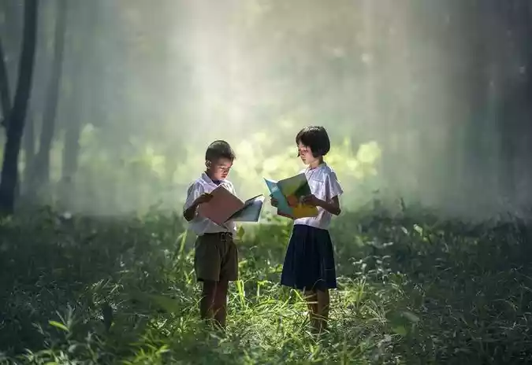
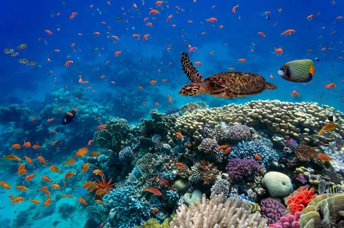
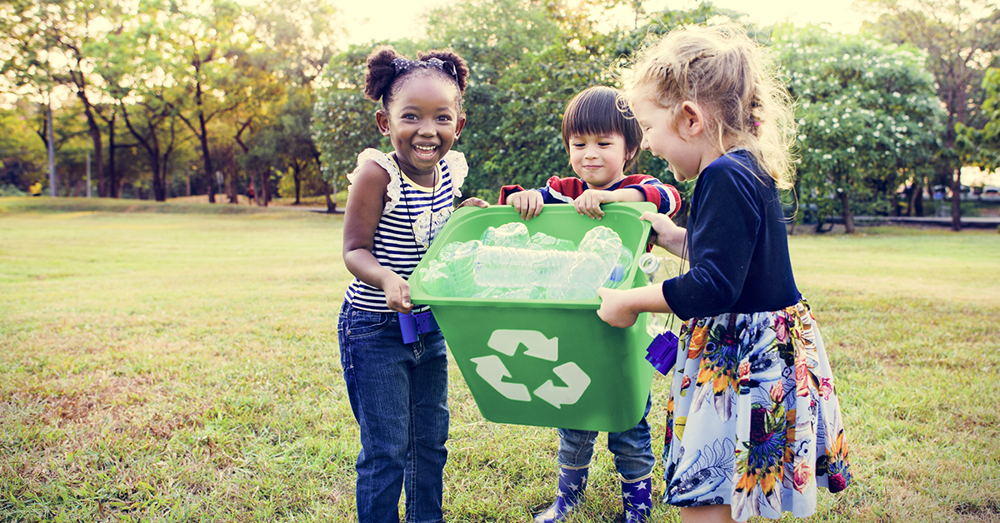
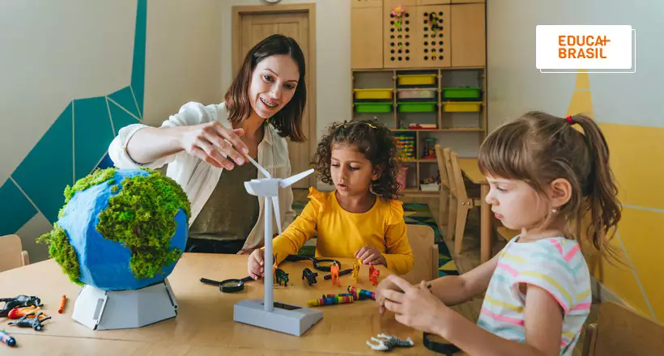
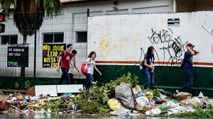

estudo
O estudo é uma parte fundamental do desenvolvimento pessoal e profissional. Ele não apenas nos permite adquirir novos conhecimentos, mas também aprimora habilidades críticas, como o pensamento analítico, a resolução de problemas e a comunicação.
Existem diversas abordagens para o estudo, incluindo métodos tradicionais, como leitura e anotações, e técnicas mais modernas, como o uso de tecnologias digitais e plataformas online. Além disso, é importante considerar a criação de um ambiente propício ao aprendizado, com menos distrações e recursos adequados.
A motivação e a disciplina também desempenham papéis cruciais. Estabelecer metas claras e dividir o conteúdo em partes gerenciáveis pode tornar o processo mais eficiente e menos estressante.
Por fim, estudar não se limita apenas a absorver informações; envolve também a aplicação prática do que foi aprendido, seja em projetos, discussões ou experiências do dia a dia. Assim, o estudo se torna uma ferramenta poderosa para transformar conhecimento em ação.

Não existe dor em ajuda
Ajudar o outro, seja através de gestos simples ou ações mais elaboradas, é uma forma poderosa de conexão humana. Quando estendemos a mão para alguém em necessidade, estamos não apenas aliviando o sofrimento alheio, mas também fortalecendo os laços que nos unem como comunidade.

preservar a agua
Preservar a água é uma das ações mais essenciais que podemos adotar para garantir um futuro sustentável. Esse recurso natural, fundamental para a vida, é cada vez mais escasso em várias regiões do mundo. Portanto, cuidar e usar a água de maneira consciente é um dever de todos.

reciclar é bom
Reciclar é um ato de responsabilidade e consciência ambiental que se tornou fundamental nos dias de hoje. Ao reciclar, transformamos materiais que, de outra forma, seriam descartados em lixo, prolongando sua vida útil e reduzindo a demanda por novos recursos naturais.
O processo de reciclagem envolve a coleta, o tratamento e a reintrodução de materiais recicláveis na cadeia produtiva. Isso não apenas diminui a quantidade de resíduos sólidos em aterros sanitários, mas também economiza energia e água, além de reduzir a poluição gerada pela produção de novos produtos.

educação
educação é um pilar fundamental para o desenvolvimento individual e coletivo. Ela vai além da simples transmissão de conhecimento; é um processo que molda valores, habilidades e a capacidade crítica dos indivíduos. Desde a infância até a vida adulta, a educação desempenha um papel vital na formação de cidadãos conscientes e participativos.

brincadeiras
Aqui estão algumas brincadeiras de estudos que podem tornar o aprendizado mais divertido:
1. **Caça ao Tesouro**: Esconda pistas relacionadas ao conteúdo que estão estudando. Cada pista leva a outra, e a última revela um "tesouro", como um prêmio ou um lanche.
2. **Jogo da Memória**: Crie cartões com perguntas de um lado e respostas do outro. Os alunos precisam encontrar os pares corretos.
3. **Quiz Interativo**: Use aplicativos ou crie um quiz em papel com perguntas sobre o assunto. Divida a turma em equipes e veja quem responde mais rápido.
Essas brincadeiras ajudam a fixar o conteúdo de forma leve e interativa!